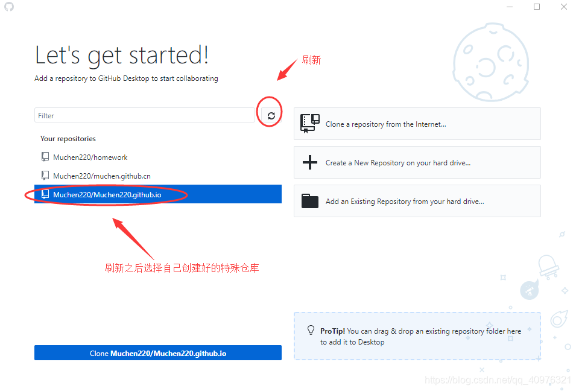
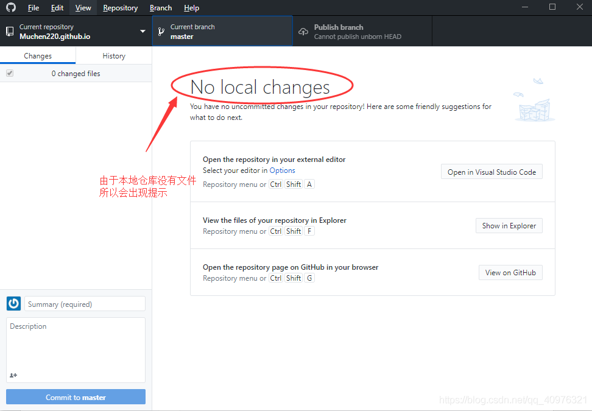

Github是借助Git管理代码的平台
- git的代码管理工具
- github是基于git实现的代码管理平台
Github的使用流程
1、在Github官网上创建账号
2、创建远程仓库（用来存储代码）
3、安装Github客户端
4、登录客户端并克隆仓库
5、在本地仓库存储数据
6、提交数据并备注信息
7、同步本地数据到远程仓库
一、安装GitHub客户端
下载地址 https://desktop.github.com/
官网下载比较慢，这里是我下载好的
链接：https://pan.baidu.com/s/1kyD3Clv97AbqPsbvxmOcnA
提取码：rg3z
下载好之后先别急着安装，去github官网登录Github,之后我们创建一个特别的仓库，这个仓库的名称跟Ower的名称一致，再加上.github.io后缀，使用这个仓库的好处就是可以使用它作为服务器，可以把自己的作品展示到服务器里面来
创建成功之后
下载好文件之后，点击运行，这里选择账户登录

选择好自己创建的特殊仓库

选择一个本地地址来克隆仓库

往本地仓库添加文件后就会发生变化
备注提交
这个仓库的特别之处就在于可以把它当做一个服务器，服务器的地址就是用户名相同的这个
输入到网址上就可以搜索到项目了，我们可以给自己的项目上传到github上面，通过链接就可以分享给自己的好友。
注意一点，如果有多个作品的话，就需要创建文件夹
刷新自己的github会发现上传的文件已经到仓库了。
接着我们来访问自己的项目，我们通过输入特殊仓库地址+项目文件名+项目页面就可以实现访问自己的项目了，这样就可以通过链接方式将自己的项目发送给好友欣赏。
如果对于教程还有不清楚的，建议去看看相关的视频教学，以下是我参考的gitHub的相关视频地址 https://ke.qq.com/course/237926?taid=1579564417655142


 2100
2100

 被折叠的 条评论
为什么被折叠?
被折叠的 条评论
为什么被折叠?
 到【灌水乐园】发言
到【灌水乐园】发言